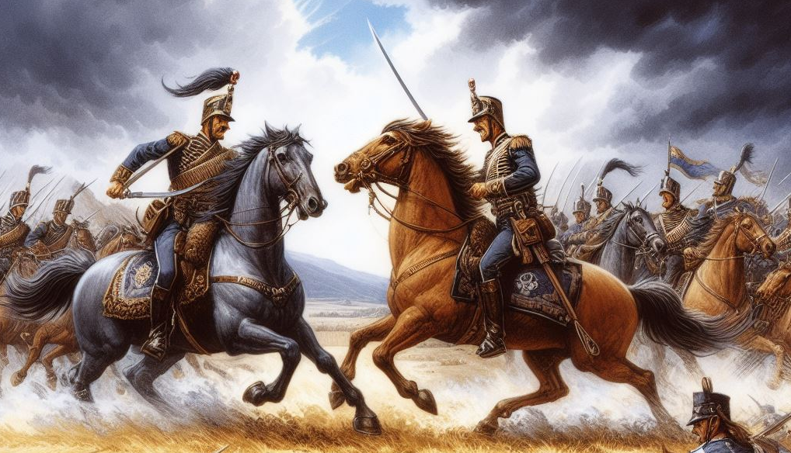

Riddles of War
Proverbs 30
Published on 2024-05-15

The Place of Proverbs 30 within the book
The whole Book of Proverbs is one big riddle. We are told in 25:1 that King Hezekiah's men had a part in selecting and arranging material attributed to Solomon. In 30:1, we hear that an oracle named Agur, son of Jakeh is responsible for that chapter. Lastly, in 31:1, we hear that the final chapter was based on wisdom from King Lemuel and his mother. For centuries, scholars have battled over how the various books of the Bible were written and edited, by whom, and when they were assembled into their current form. Proverbs is that rare book that includes traces of its editorial process. The book admits that it is a collective effort conducted over the centuries, so nobody can dispute that.
Apart from set pieces, like some of the poems in the beginning and the chapters at the end mentioned above, Proverbs appears to the casual reader in most chapters to be a random collection of aphorisms presented in no discernible order. True, some chapters have many proverbs related to a single theme. One example is Proverbs 26, which looks at several categories of foolish speech from different angles. However, as a whole, it is difficult to detect a tight progression of thought from start to finish. (That is, unless the reader is a lonely bachelor, in which case the main theme is obvious - get a good wife!) As an anthology, how could it? As for the chapter boundaries, in the absence of a clear structure, how can you tell whether they were set in the best places?
The preceding questions are the riddle of Proverbs as a whole. Without solving that riddle, solving the riddle of what Proverbs 30 means is impossible. In "Appendix E: The Plan of Proverbs" from Peace, like Solomon Never Knew, a solution to that riddle is given, as well as the analysis of Proverbs 30 that you will find replicated here. Despite multiple authors, Proverbs does conform to a single structure. The current chapter boundaries were not added until Stephen Langton did so in 1205 AD. Even though he did not know the underlying structure of Proverbs and accomplished his work almost two thousand years after the book was completed, he got the chapter boundaries right; they do not contradict the structure. That is evidence of divine assistance.
The solution to the meta-riddle is that the first three chapters of Proverbs are an introduction, followed by twenty-eight chapters that conform to the twenty-eight times of Ecclesiastes 31. It is likely that the Holy Spirit caused this arrangement; if it was the work of the editors from Hezekiah's time, some record of that plan would have been left to us.
With every chapter matching one of Solomon's times, what does that say about Proverbs 30? It says that the chapter should be a commentary on "a time for war". Since this is the penultimate time preceding the hoped for era of peace, that makes is a very important chapter. Even without this knowledge, if you read the proverbs of this chapter, you will see two things at odds with one another. The thirty-three verses may be divided into thirteen sayings. The topics of the sayings seem unrelated but the same literary form is used in many of them. That form is to count similar things, then list them:
- v7: two things I ask of you
- v15a: The leech has two daughters
- v15b: Three things are never satisfied
- v18: Three things are too wonderful for me
- v21: Under three things the earth trembles
- v24: Four things on earth are small
- v29: Three things are stately in their tread
In addition to that, there are four "there are those..." parables from 30:11-14. This obvious stylistic consistency is absent from most chapters in Proverbs. Anyone who reads chapter 30 will have the sense that there is some larger point that the author is trying to make, but it will elude them. What is that point? Proverbs 30 is God's battle plan for the final war between good and evil. Deciphering that plan was not easy. That is what made the victory of solving this riddle so sweet.
Proverbs 30. 2160-2280 AD. A time for war
Theme
Several verses here transport us to the battlefield of this “time for war” where weapons are drawn:
There are those whose teeth are swords,
whose fangs are knives,
to devour the poor from off the earth,
the needy from among mankind. (30:14)
We see a shield (30:5), insects behaving like advancing soldiers, for “the locusts have no king, yet all of them march in rank”. (30:27). After that, one appears to lead them, when we see “a king whose army is with him.” (30:31) Then the chapter ends with the strife of a fistfight:
For pressing milk produces curds,
pressing the nose produces blood,
and pressing anger produces strife. (30:33)
Woven in among the references to war are the causes that inflame it: covetousness (30:15-16), pride (30:29-31), boasting (30:32), anger (30:33), and usurpation (30:21-23). You can almost hear the trumpets announce the charge. Yet amongst the chaos, there is a well-defined plan…
Prophecy
Before that plan, a riddle. This chapter contains the first Bible riddle I ever solved. I am not alone in solving it, but oh the thrill when I first read it!
Surely I am only a brute, not a man;
I do not have human understanding.
I have not learned wisdom,
nor have I attained to the knowledge of the Holy One.
Who has gone up to heaven and come down?
Whose hands have gathered up the wind?
Who has wrapped up the waters in a cloak?
Who has established all the ends of the earth?
What is his name, and what is the name of his son?
Surely you know! (Proverbs 30:2-4, NIV)
Jesus, Son of God, came down to earth in the incarnation and ascended to heaven again after his resurrection. What a marvelous riddle. What a satisfying answer for a Christian looking for confirmation of their beliefs in the Old Testament.
What a misreading! The riddle I solved was “Who has come down from heaven and gone up?” I had it backwards. This riddle is not about the incarnation and ascension. It is about the ascension and rapture. This riddle is also not about Christ alone. It is about his church. Every believer who has died and ascended to heaven will come down with Jesus to join those who remain alive.
When I solved that riddle years ago, I was missing a crucial piece of the answer. According to Solomon’s times, chapter 30 is “a time for war” and falls between 2160-2280 AD. Just as Enoch was raptured near the beginning of the second generation, so by symmetry this rapture will occur near the end of the next to last time.
This introduction to the chapter seems benign, but what do we know about the time when God shall come down from heaven?
Oh that you would rend the heavens and come down,
that the mountains might quake at your presence—
as when fire kindles brushwood
and the fire causes water to boil—
to make your name known to your adversaries,
and that the nations might tremble at your presence!
- Isaiah 64:1-2, ESV
When God finally comes down from heaven, it will be to join the battle. How may we prepare? What is the battle plan? Has the Lord told us anything solid about how this conflict will unfold?
Yes! Just as Proverbs 26 gave Satan’s long term strategy for opposing the church, this chapter describes the climactic years of the war. Besides the riddle about the Lord descending from heaven, it contains seven parables which each group four observations into a unit for comparison. Where numbers appear, there is often a progression of some sort. Where the same number appears again and again, there is a clock to be found.
The Battle Clock
Despite the extensive use of many symbols found in other clocks and prophecies covered previously in this book, inferring the structure of this chapter took almost a week. It employs chiasms, progressions through time and space, the numbers four and seven, the harvest pattern and Solomon’s twenty-eight times. It also connects to the five missionary eras.
(For two riddles related to those five missionary eras, see Parable of the Workers in the Vineyard and The Parable of the Wedding Feast.)
In the following analysis, the patterns in this chapter will be applied mostly to history. Since it describes tactics and strategies of the war between good and evil, it is likely that this pattern will repeat in the future in unexpected ways on a shorter timescale when the final “time for war” arrives. We are living through the dry run.
At the largest scale, the war story is as follows:
- Announce the Oracle (30:1a)
- Introduce the rightful leader – God (30:1b)
- Leader & his servants march to battle (30:2–4)
- Certify the oracle (30:5–6)
- Introduce the loyal servants (30:7–9)
- Cassus belli: crimes against the servants (30:10)
- Evil behavior of the rebels (30:11–14)
- Introduce rebels opposing the servants (30:15a)
- Rebels march to battle (30:15b–31)
- Leader & his servants march to battle (30:2–4)
- Reveal the rebel leader (30:32–33)
Quartets
The preceding is not the only structure involved. Through a clever bit of misdirection, the reader is made to focus on the formula “three things… four”. Four proverbs use this formula and a fifth uses “four things” without the three (30:24–28). Two proverbs count using “two”. Look closer and you see another list of four items without a count (30:11–14) that use the formula “there are those”. How do these units relate to one another?
After studying the Psalms and Ecclesiastes, we are now accustomed to seeing things grouped into fours and sevens. Though it may not look like it, we have seven parables each consisting of four parts. Four follow the three-four pattern and three do not. The first two are trickiest. The loyal servant begins in verse 7 by saying, “Two things I ask of you…” Later on, in verse 15, we have “The leech has two daughters: Give and Give.” Two plus two equals four. These verses describe the heart attitude of the the two warring parties. The servant exhibits contentment and the rebel, covetousness and discontent.
What complicates this pattern is that between the two “twos”, we have in verses 11–14 a description of the evil behavior of the rebels using the formula “there are those”. Thus one quartet parable is wedged inside another. This device shows how the two parties – servants and rebels – are enemies in this conflict, separated by crimes committed by the rebels. Also, this first quartet of the two “twos” corresponds in the harvest pattern to the preparation phase, when a person is consecrated or exiled, separated from normal society for God’s purposes. Thus the offense against the servants in verse 10 (slander) and the other evil behavior of verses 11–14 (cursing, self-deceit, pride, and malicious talk) deepen the separation and constitute the plowing phase of suffering.
The remaining five quartet parables (15b–16, 18–19, 21–23, 24–28, and 29–31) each match subsequent phases of the harvest, with a twist. Instead of true peace, the final phase is victory in battle.
Ascent and Descent of the Righteous
Thus we have seven quartets, or 7 x 4 = 28 in the largest part of the chapter. The four is emphasized by repeating the three-four formula four times. Four relates to the seasons hence to time. The introduction of the ruler also makes use of these two numbers via addition: 4 + 7 = 11. If not for this simple formula, the connection between verses 2–3 and verse 4 would never have occurred to me.
In Job 38–41, the metaphors follow a simple but easily overlooked spatial progression. God begins from heaven, passes through the heavens to the sky and birds, then to the land with the animals, before approaching the battlefield at the end of chapter 39. In chapter 40, He descends into the grave to face Behemoth, before finally meeting Leviathan in the heart of the sea in chapter 41.
We have a similar (albeit abbreviated) journey here, which first ascends and then descends.
- A. Surely I am too stupid to be a man. (30:2a). The NIV say “I am a brute”. In humility, the writer claims to have only as much sense as the animals.
- B. I have not the understanding of a man. (30:2b) He rises to the level of basic human comprehension, but not so great as an educated, intelligent person.
- C. I have not learned wisdom… (30:3a) Now he possesses understanding, but not the heights of worldly wisdom possessed by the greatest sages.
- D. nor have I knowledge of the Holy One. (30:3b) Now he ascends to the heights of secular wisdom, but lacks the knowledge imparted only by the Holy One.
- E. Who has ascended to heaven… Passing beyond holy knowledge, he miraculously arises. This encompasses the ascension of both Christ and the saints who by rapture or a blessed death rise to meet him.
- F. and come down? With escort divine and perception transformed, the leader ( Jesus) and his faithful servants descend to approach the field of battle.
- E’. Who has gathered the wind in his fists? Through air…
- E. Who has ascended to heaven… Passing beyond holy knowledge, he miraculously arises. This encompasses the ascension of both Christ and the saints who by rapture or a blessed death rise to meet him.
- D’. Who has wrapped up the waters in a garment? & water, which by baptism symbolizes the Holy One
- D. nor have I knowledge of the Holy One. (30:3b) Now he ascends to the heights of secular wisdom, but lacks the knowledge imparted only by the Holy One.
- C’. Who has established all the ends of the earth? … to earth.
- C. I have not learned wisdom… (30:3a) Now he possesses understanding, but not the heights of worldly wisdom possessed by the greatest sages.
- B’. What is his name, and what is his son's name? At last understanding the Son of Man…
- B. I have not the understanding of a man. (30:2b) He rises to the level of basic human comprehension, but not so great as an educated, intelligent person.
- A’. Surely you know! (30:4) … with sure knowledge at last.
Notice how the heart of the chiasm is not the ascent up to heaven, it is the descent. Notice also that the ascent is of the mind attaining greater insight, whereas the descent is in the physical realm, by power, as God controls the wind, water and earth. The first four parts are about the humility of the oracle whose understanding grows through time (as symbolized by four). Then the remaining seven are about the wisdom and power of God and His Son, for 4 + 7 = 11. As soon as ignorance of the Holy One is declared, we enter the realm of the Holy Spirit, whose number is seven.
The ascent and descent are further enclosed in two statements about the oracle, in verses 1 and 5–6. The first announces it, along with the speaker’s weakness. It is common for prophets to be overcome with weakness in the presence of God’s strength. The second statement declares the power and truthfulness of that oracle, with a warning that God will demonstrate his powerful wrath against any who corrupt that word. This warning is similar to the warnings at the end of Ecclesiastes and Revelation.
So God and His servants arrive in glorious majesty and power from on high. How does the enemy leader arrive?
Ascent and Descent of the Enemy
The attributes of the rebel leader are described in the conclusion of the chapter:
If you have been foolish, exalting yourself,
or if you have been devising evil,
put your hand on your mouth.
For pressing milk produces curds,
pressing the nose produces blood,
and pressing anger produces strife.
(30:32-33)
Self-exaltation describes the rebel’s boastful mouth, where the realm of truth is filled with lies. Devising evil describes the rebel’s wicked heart, where the seat of desire has corrupted goals. The command to “put your hand on your mouth” is a command to not use the hand (physical action) to act on the evil impulses of mind and heart but do something useful – stop uttering foolish words. Yet the rebel does not heed the warning. He punches the righteous in the nose to draw blood and stirs up strife.
“Pressing anger” in verse 33 is about the heart and “pressing the nose” is about action. This would lead one to think that “pressing milk” had to do with speech, the only category of verse 32 without a match in verse 33. This may be an ancient but unfamiliar idiom. Churning milk into butter or cheese changes its character. This may refer to corrupting the effect of speech through deceit.
We know that Satan exalted himself, claiming equality with God, and he is a violent liar, so these verses unmask him. The question remains, how will the battle unfold? The answer is found in two places: seven four-part parables and four interruptions. First, let us visit the interruptions, for they identify the fields of battle.
The Five Battlefields
It is easy to miss the five interruptions to the poetic structures in Proverbs 30. In my case, these six verses (5–6, 10, 17, 20, 32–33) were what was left over after removing all the patterns I could recognize. That makes them an anti- pattern. In three cases judgment is declared explicitly (verses 5–6, 10 & 17). In the other two (verses 20 and 32–33), judgment is implicit, for it names two figures from Revelation that received judgment.
The five battlefields are:
- the individual (30:5-6)
- the workplace (30:10)
- the family (30:17)
- the church (30:20)
- the state (30:32-33)
The individual. Very few were the times when God spoke to a crowd – apart from Jesus’ earthly ministry. Most conversations were with individuals like Abraham, Moses, Isaiah, or Paul.
Every word of God proves true;
he is a shield to those who take refuge in him.
Do not add to his words,
lest he rebuke you and you be found a liar. (30:5-6)
The above words condemn directly the person who disparages, distorts, adds to or removes from the words of this chapter. Then by extension this may be applied to all of Proverbs and to the whole Bible. Yet this declaration of protection by God for His word extends farther. Every saint, pastor, priest, monk, mother or father, Sunday school teacher, or theologian who following prayer, careful reflection on God's word and with a sincere heart and the assistance of the Holy Spirit speaks divine truth and comfort to the people around them is also protected.
It is individuals who stood for the right of the common people to read the Bible in their own language and were martyred. It was individuals who taught us that we can be saved by grace alone through faith alone and faced invading armies sent to silence them. It was individuals who went overseas to share their faith with the world. The enemy attacks individuals, because it is to individual hearts that God’s love speaks.
The workplace. Verse 10 dives into our work relationships, saying,
“Do not slander a servant to his master,
lest he curse you, and you be held guilty.”
The worst situation in this field is slavery, but other forms of oppression related to work have occurred in history. Because of the concentric embedding of this verse within the first two quartets, this battlefield is introduced twice: halfway through the first quartet and before second quartet. Halfway through the first quartet means 240 years after 960 BC, or 720 BC, just a couple years after Israel was carried into Assyrian Captivity. Such enslavement certainly relates to the workplace. It also starts off the chain of empires that would enslave Israel: Assyria, Babylon, Medo-Persia, Greece and Rome.
The second quartet began in 480 BC. It ended with the incarnation, when the Son of God “emptied himself, by taking the form of a servant” (Philippians 2:7, ESV). God did the inconceivable. Many cry to him for liberty, but who expected Him to sacrifice his own to achieve this?
The family. The Nazis created Hitler Youth to replace traditional morality and religion with his demonic philosophy. They knew that they needed to seize the authority to teach children away from their parents. the communists did similar things. Today, when you hear about the governor of a major state or the head of a teacher’s union saying that parents should not dictate what is taught in public schools, it is the same thing. They want to break the family’s ability to teach their Christian faith to the next generation.
There are those who curse their fathers
and do not bless their mothers. (30:11)
The eye that mocks a father
and scorns to obey a mother
will be picked out by the ravens of the valley
and eaten by the vultures. (Proverbs 30:17, ESV)
Verse 11 is part of one of the quartets and describes one crime of the wicked as rebelling against parents. Then verse 17 describes God’s judgment. It isn’t pretty. The family is a crucial part of God’s plan of salvation. Without it, the faith would be gone in two generations.
The seven quartets correspond to seven eras of four times each, beginning with Solomon’s temple dedication in 960 BC. Thus the placement of this battleground verse falls between the third and fourth eras, circa 480 AD. If it announces actions to commence in the subsequent era, then what occurred between 480–600 AD related to the family? In 529 AD, Emperor Justinian enacted a new legal code for the Roman Empire that attempted to incorporate Christian morality into law. One change was to abolish no- fault divorce, which had been practiced for a thousand years. This innovation was swept away by his successor, but it signaled the start of many cultural changes to how families were constituted and governed.
The church. The devil’s attack on religious institutions is relentless. If individuals hear God’s guidance and families propagate it, the church organizes it into a force for good, in areas like charity, education and medicine.
This is the way of an adulteress:
she eats and wipes her mouth
and says, “I have done no wrong.” (30:20)
The adulteress is used as a metaphor for false religion. Revelation 17 describes her as a prostitute astride a scarlet beast. Though this passage does not declare her downfall, other proverbs and other prophets do.
The placement of this battleground verse falls between the fourth and fifth eras, circa 960 AD. It commences a major destabilization of the church as well as significant reforms. The Great Schism of 1054 AD kicked things off and the Fall of Constantinople amplified it. Battles within the church would continue to escalate in subsequent times.
The state. The progression throughout the chapter is clear. Individual, work, family, church, state… Each comprises a larger sphere of authority and scope of action. We have already studied verses 32–33 in regards to how by revealing the character of the rebel they also revealed his identity – Satan. Since Satan is a tyrant who seeks to dominate all world systems, this passage doubles as the final battlefield. The two most lethal situations in society are anarchy and tyranny. Anarchy kills more people, but seldom lasts long. People long for security so that they can carry out basic responsibilities like farming, building houses and raising kids without brigands attacking them constantly. To suppress the anarchy, people submit to governments. Thus Satan fosters anarchy to push people toward his chosen form of government and thereby enslave them.
Pride, violence, lies and evil – all are found in the conclusion of this oracle. The battlefields have been identified. Now it is time to look at the sevenfold battle plan. Each parable corresponds to a timeless element of war while also prophetically matching successive eras in history, following Solomon’s Clock.
The Sevenfold Battle Plan
The seven riddling quartets stand for seven dimensions of the battle plan. They have universal aspects, but some reference a particular era of history.
- Combatants (30:7–9,15a) Security. 960–480 BC.
- Cassus belli (30:10–14) Ability. 480 BC–1 AD.
- Cost (30:15b–16) Stability. 1–480 AD.
- Strategy (30:18–19) Amity. 480–960 AD.
- Promotion (30:21-23) Opportunity. 960–1440.
- Tactics (30:24–28) Community. 1440–1920 AD.
- Leadership (30:29-31) Loyalty. 1920–2280 AD.
Combatants. The combatants are the righteous and the wicked. By embedding references to the character of the wicked (the cause of the war) within this first riddle, we see the inevitability of the conflict. It flows from the nature of the wicked, not the righteous. The wicked are the aggressors. The opposing poles are contentment versus greed, envy and jealousy.
The splitting of the first riddle into two pieces, one for the righteous and one for the wicked, shows graphically the division of Israel due to its civil war. The corresponding quartet of times includes “a time to die” and is acknowledged by the writer, who says, “Two things I ask of you; deny them not to me before I die.” As for planting and uprooting, the writer pleads for a middle way, of enjoying his daily bread instead of poverty (uprooting) or riches (planting).
The first life phase is Security. Security is the concern expressed by both wicked and righteous in this quartet. The fundamental difference is the party each turns to to obtain that security. The righteous turn to God in humility while the wicked turn to other humans with violent demands to “Give!” They pervert a word supposed to refer to voluntary goodness and generosity into a selfish command backed by force. Sounds like communism to me.
Cassus belli. The primary cause of the war is the persecution of the righteous by the wicked in verse 10. The interesting thing is that it singles out slander as the offense, not murder or some other atrocity. Slander is an offense of speech and relates to the Word. Thus the key offense is the opposing of God’s Word, his Son, by lies. This second era of the battle clock is also the era when no prophets spoke to Israel, the time between the testaments. Thus while the wicked raged, God remained silent.
Other offenses of the wicked relate to this time period. “There are those who curse their fathers and do not bless their mothers.” (30:11) Queen Esther lived at the beginning of this era. Her husband, the king of Persia, passed legislation that granted tyrannical powers to husbands over their wives, on account of his wrath over Queen Vashti’s behavior. Likewise, in 449 BC, the young Roman Republic promulgated The Laws of the Twelve Tables, the first codification of its laws. This enshrined principles that gave powers of life and death, liberty and slavery over family members to fathers, called patria potestas. This was humanity’s harsh, unforgiving, unjust and overbearing solution to children disrespecting their parents.
As for arrogance, “There are those—how lofty are their eyes, how high their eyelids lift!” (30:13) This describes Alexander the Great to a T, “whose teeth are swords, whose fangs are knives…” (30:14) He and others like him “devour the poor” by enslaving them in ever larger numbers. On the other hand, this era ended with a different kind of family and a different kind of conqueror. Joseph listened to an angel and set aside his right to divorce Mary. Then Joseph and Mary risked everything to protect their son, serving him and not themselves. Finally, Jesus became poor that he might lift up “the needy from among mankind” and devour their oppressors instead.
The second era corresponds to the life phase of Ability. The Greeks and Romans developed many new abilities in Mathematics, Science, Engineering and Philosophy. Yet the charges against the wicked summarize where children – and civilizations – go wrong. Their families are dysfunctional, their hearts self-righteous, their words proud and their actions violent and oppressive.
Cost. In Luke 14:31–38, Jesus urges people to count the cost of following him:
“Or what king, going out to encounter
another king in war, will not sit down first and deliberate
whether he is able with ten thousand to meet him who comes
against him with twenty thousand?”
Jesus counted the cost of obeying and paid it. The cost was death on a cross.
Three things are never satisfied;
four never say, !Enough”:
Sheol,
the barren womb,
the land never satisfied with water,
and the fire that never says, "Enough." (30:15b–16)
The proverb lists the consequences of war from most to least severe. If you begin with fire and go backwards, the order should look familiar as it is the order of the four horsemen of the apocalypse. In Revelation, the list as it is popularly spoken is “war, famine, pestilence and death.” The more precise list is war, civil war, pestilence and death. However, civil war is a judgment against the land. Civil war interrupts agriculture, leading to famine. A drought- induced famine can cause the inverse as people fighting over scarce resources trigger a civil war.
- Fire means war and is used as analogy in many prophecies, such as Judges 9:7–15, where brambles are set alight and consume the trees of the forest.
- Water when absent causes drought, leading to famine, a curse on the land.
- The womb becomes barren due to poor nutrition, miscarriage or the death of children in battle.
- The grave (Sheol) opens its jaws to welcome the dead.
This era was when Jesus, who had miraculously entered a barren womb, became living water and bread of life and overcame the grave. The Holy Spirit descended with tongues like fire and the church spread like a wildfire until the whole Roman Empire was consumed. Jesus and his church counted the cost, paid it, and though smaller in number overcame their beastly foe.
The cost encompassed all four classical elements: air, water, earth, and fire. Air is the breath of the Spirit given to us when we are born. Water is the womb which protects. Earth is the land we depend upon for food. And fire protects us from cold and cooks our food. All are taken by death. All are offered anew by God in His Kingdom.
By the end of the life phase of Stability, the church held the reins of history’s longest enduring empire. Surely that was a stable foundation upon which to build!
"Behold, the days are coming,” declares the Lord God,
"when I will send a famine on the land— not a famine of
bread, nor a thirst for water, but of hearing the words of
the Lord.”
- Amos 8:11, ESV
At last the famine of Amos was over. The full Word could now be heard.
Strategy. Though the next era encompasses the life phase of Amity (relationships), the parable of eagle, serpent, ship and maiden spans the whole church age, not just 480–960 AD. Furthermore, without prior analysis of Job and Matthew to inform the analysis, verse 17 would be tossed aside, for it makes the four analogies of the parable into five, corresponding to the five missionary eras of the church.
The eye that mocks a father
and scorns to obey a mother
will be picked out by the ravens of the valley
and eaten by the vultures.
Three things are too wonderful for me;
four I do not understand:
the way of an eagle in the sky,
the way of a serpent on a rock,
the way of a ship on the high seas,
and the way of a man with a virgin.
- (30:17–19)
The subtlety of this parable is matchless. The judgement by the ravens is set off from the the other four because the first has to do with God’s gracious provision for and protection of a defenseless church during its early years and the first missionary age, the days of the Apostolic church. The other four indicate the church leaving its place of security to wage war against the devil’s minions in four campaigns of increasing scope and difficulty.
First, let us prove from Job that these five images belong together. To Job (and later Elijah), ravens were first symbols of God’s grace, not his judgment.
“Who provides for the raven its prey,
when its young ones cry to God for help,
and wander about for lack of food?”
- Job 38:41
God fed Elijah by ravens and his church in like manner, when it was too few in number and too weak in power to act on its own.
God continues his speech by commenting on many animals, such as the eagle (Job 39:27–31) and Behemoth (Job 40:15–24), which resembles a dinosaur in description and corresponds to the snake of our parable, as it is a reptile and symbolically a servant of Satan. Next up is Leviathan ( Job 41), whom God says it is folly to hunt with a harpoon from a ship. Last is the maid or virgin, of which three appear in Job 42: Job’s beautiful daughters. The passages about the raven, eagle, behemoth, and leviathan each conclude the respective chapters, and but two verses about Job’s end follow the words about his daughters. So the five most prominent images from the five chapters of God’s speech are the five images in this parable. That is subtle!
If Job’s speech is structured around these five images and Proverbs 30 lists them in the same order, that order is surely significant. As related earlier, God’s speech in Job is a journey from heaven, to the sky, to the earth, to the gates of the underworld, to battle against Satan’s champion, and finally to victory and peace. It is a path. The parable in Proverbs 30 speaks of a mysterious way. It is the same. It is the path God chose for His church to follow in order to build his kingdom.
It is also the path followed by Israel:
- The raven was the miraculous means God used to sustain Elijah in the wilderness in 1 Kings, when he was on the run from Jezebel and Ahab. Elijah’s experience is a foreshadowing of Judah’s exile. A vital detail is Jezebel’s heritage: she was daughter of the king of Tyre.
- The eagle is spoken sometimes as an image of God’s care, bit more often as an agent of judgment carrying people into exile. This sense is intended by Moses in Deuteronomy 28:49, by Jeremiah in Jer 4:13 and Lamentations 4:19 (directly naming Babylon), and Ezekiel. In Ezekiel 17 there are two eagles and two exiles. The second is more devastating than the first, making the first eagle Babylon and the second eagle Rome. Yet none of those passages is as haunting as Micah. “Make yourselves bald and cut off your hair, for the children of your delight; make yourselves as bald as the eagle, for they shall go from you into exile.” (Micah 1:16 ESV). When the eagles carried them off, the Jews lost house and field, temple and nation. All they had left were their families.
- The snake is tricky. Hezekiah in 2 Kings 18:4 destroyed Nehushtan, the snake Moses made, for the people now regarded it as an idol. Hezekiah is the one Isaiah alludes to in 14:29, saying “Do not rejoice, all you Philistines, that the rod that struck you is broken; from the root of that snake will spring up a viper, its fruit will be a darting, venomous serpent.” Ahaz was the snake whom the Philistines did not fear, but his son Hezekiah, was a viper, wise and cunning. That is the good news interpretation. For the bad news, we have this: “‘For behold, I am sending among you serpents, adders that cannot be charmed, and they shall bite you,’ declares the Lord.” (Jeremiah 8:17) This fits better, because it describes the destruction that comes in the midst of the exile, hence follows the eagle chronologically.
- The ship on the sea could refer to Jonah, who tried to flee God by ship to Tarshish, whose identification is uncertain, but may be Sardinia, due to the kind of silver found there. It represents a reluctant missionary event. However, Isaiah prophesied the destruction of Tyre (in Isaiah 23), saying “Wail, O ships of Tarshish, for Tyre is laid waste.” Tarshish and Tyre were both Phoenician holdings. The association of Tyre and “the way of a ship on the high seas” in Proverbs 30 is made clearer by this prophecy:
Thus says the Lord,
your Redeemer, the Holy One of Israel:"
"For your sake I send to Babylon
and bring them all down as fugitives,
even the Chaldeans,
in the ships in which they rejoice.
I am the Lord, your Holy One,
the Creator of Israel, your King.”
Thus says the Lord,
who makes a way in the sea,
a path in the mighty waters…
- Isaiah 43:14–16
Thus Isaiah has interpreted the Proverb as speaking about a naval battle, blockade and siege. The siege of Tyre lasted 13 years and began in 586 BC, the year the temple in Jerusalem was destroyed. Thus this follows in sequence the initial exile of the people (the eagle) and the destruction of city and temple (the snake).
- The maiden (or virgin) is the final element of the riddle. Surely this refers to Queen Esther, who mastered the art of how a woman must behave around a merciless and hot-tempered king and so saved the Jews from genocide. The way of a man with this maid went her way.
Thus the five elements of the riddle begin with a single man (Elijah) and end with a single woman (Esther). They describe a long war leading through exile and destruction to a respite of peace. The prophets matched the elements, one by one, through a series of prophecies. Now we must do the same for the church.
The raven is a symbol of God’s provision. There is an ancient story about Saint Anthony, one of the Desert Fathers and an early practitioner of the monastic life. Anthony lived in the late 3rd and early 4th centuries, during the first missionary era. In his biography of Anthony, Athanasius reported that a raven often brought Anthony half a loaf of bread, but when he had a visitor, Paul of Thebes, the raven brought a whole loaf. This account of Anthony was popular reading among Christians for over a thousand years and firmly established the raven as a positive symbol among Christians.
The eagle in the sky was Rome, whose legions marched behind an eagle as their standard. This second missionary era began when the Roman Empire became a Christian empire in 380 AD.
The snake on the rock matches the era when the church expanded by land (over rock), up to Russia and Poland in the east and northern Europe and England in the west. During this third missionary era, Satan remained bound, but the Islamic empire captured Jerusalem and built the Dome of the Rock, which includes an inscription rejects the possibility that God has a Son. This era would end when the snake got free.
The ship on the high seas symbolizes the age of exploration. During this fourth missionary era, Portugal, Spain and other Christian kingdoms spread the faith to the New World by sea.
The way of a man with a maid (or virgin) goes with the fifth and final missionary age. In this era, women began to emerge from constrained lives. Like Queen Esther, they helped spread the message of salvation to the world.
This parable also makes reference to the four elements. Set aside the raven, which is not part of the quartet and you have the eagle’s sky for air, the snake’s rock for earth, the ship’s sea for water, and the maiden for fire, because “Can a man scoop fire into his lap without his clothes being burned?” (Proverbs 6:27, NIV). This association helps explain the contrast between the first three items. The phrasing “Three things are too wonderful for me; four I do not understand” implies that all four items are similar, but the fourth stands out. How is the fourth different from the preceding three?
The fourth analogy is not about searching for food or trading opportunities. It is about love. This era falls during the life phase of Amity, for relationships. This era is experiencing radical changes in how human relationships are structured (some good, some bad). We know the history of the last few centuries is unprecedented. The biggest difference is the enhanced participation of women. If Esther saved all the Jews and she is Israel’s fulfillment of the final analogy, what will Christian women do?
Promotion. Within any army, you need to identify capable soldiers to elevate to positions of greater responsibility. Existing leaders must train their troops in martial skills and character and observe them. Soldiers, on the other hand, must keep their eyes open for opportunities to advance. This fifth life phase is all about exploiting Opportunities and material possessions to grow and prosper. The parable is about the perils that attend this process.
Under three things the earth trembles;
under four it cannot bear up:
a slave when he becomes king,
and a fool when he is filled with food;
an unloved woman when she gets a husband,
and a maidservant when she displaces her mistress.
- (30:21-23)
History is full of examples of people who rose from slavery to authority. Some were disasters. Others (like Joseph) acquitted themselves admirably. The Bible has examples of unloved wives, like Jacob’s Leah and usurping maidservants, like Hagar tried with Sarah. However, when these verses are applied to Christian history, they more refer to massive social changes, not individuals. Strikingly, each analogy matches one of Solomon’s times.
Serfdom (960-1080 AD). This era saw a rapid decline in the practice of slavery in England and on the continent. It was replaced with the institution of serfdom. The improvement in status may look infinitesimal in our eyes, but serfs possessed many civil rights that slaves did not. Philosophically and legally, they were now people, not property. They were no longer “animals with voices” as the Greeks once taught. Serfs could inherit land. Improvements that they made to their holdings remained theirs to exploit, encouraging greater industriousness. This would become evident during the next time.
Fools with food (1080–1200 AD). The Medieval Warm Period and improvements in agricultural technology, motivation for serfs to improve their land where slaves would not have, and Christianization of the Vikings changed Europe. Grain yields and population doubled, life expectancy lengthened by ten years, and the added wealth bestowed power upon the fools of Northern Europe.
The unloved women of the Cathars (1200–1320 AD). The Albigensian Crusade destroyed the Cathars, which had great appeal to women on account of its teaching and practice of equality. These women were accomplished heretics and suffered the ultimate penalty.
The maidservant (1320–1440 AD). At last we reach an individual. Joan of Arc was called “the maid of Orleans”. Detractors jealous of her power and influence conspired for her to be tried and executed. In addition, due to the Black Death, poor women displaced men in many trades, because there were not enough men left alive to perform them. When the demographic imbalance was rectified, those in power clawed back many of the freedoms women had acquired during this brief period.
New legal rights, more plentiful food, and vacancies in society conspired to give women and the poor new opportunities, which advanced civilization and set the stage for the next act.
Tactics. We come at last to military tactics, when the army takes the field and begins to advance towards its goal. This sixth era is the life phase of Community. It involves forming and breaking alliances and each analogy corresponds to a different one of Solomon’s times.
Four things on earth are small,
but they are exceedingly wise:
the ants are a people not strong,
yet they provide their food in the summer;
the rock badgers are a people not mighty,
yet they make their homes in the cliffs;
the locusts have no king,
yet all of them march in rank;
the lizard you can take in your hands,
yet it is in kings' palaces.
- (30:24-28)
The ants (1440–1560 AD). The ants are masters at logistics. An army marches on its stomach. During this era, the European Colonial Empires conquered the New World and expanded in other areas. They improved sea transport, obtained gold, silver, and many new foods, like potatoes and corn.
The rock badgers (1560–1680 AD). The hyrax or rock badger can hide in crevasses, so this is about finding shelter. Maintaining billets for soldiers in advanced positions with food, water, and protection from the cold is essential, as Napoleon learned when the Russian winter destroyed his Grand Armee. In this era, it was Pilgrims, Anabaptists and other nonconformists fleeing persecution who voyaged to the New World. They were not mighty people – but they became so!
The locusts (1680–1800 AD). The locusts have a common purpose and enviable discipline. This esprit de corps was Christian civilization. The locusts (as developed previously) were the European Colonial empires in their most expansive phase, acting just like locusts. The Kings and Queens of the British Empire did not say, “Let’s conquer Afghanistan today.” Instead, English traders, teachers, doctors, and missionaries traveled out from the British Isles to pursue their private though interlocking goals. When they got in trouble, they called for help and the Royal Navy showed up with an expeditionary force. Next thing you know, England has another colony. Today, people in academia as well as the general public loath colonialism. God was blunt. He told us long ago, “This is how I am am going to get the job done. These empires will come like locusts, eat as much as they can (stripping countries of their resources), and then leave. And they will accomplish what I intend. In my name, they will destroy all the nations, for all the nations have blasphemed my name.” Does this horrify you? It should. That was the reaction of Habakkuk and other prophets, who tried to talk God out of his plans. This emotion of horror is our spirit rebelling against the truth that our sins are so vile that God is justified in doing this.
The lizard (1800–1920 AD). How do you invade a castle? You can bombard the walls with cannon, or you can dig a tunnel, bribe an official to identify a weakness, or sneak a spy in to open the gates. Christendom’s siege engineers and spies were its missionaries, who converted people to a new worldview with a new allegiance – to Christ and his church. Also, the spread of democracy undermined the philosophical basis for monarchies. During this era, many kingdoms fell and few remain today. There was a wholesale revolution in leadership.
Leadership. The life phase for this era is Loyalty, a fitting companion to leadership. This seventh and final parable is a reprise of the history of the great empires, with maybe a hint of what is yet to come.
Three things are stately in their tread;
four are stately in their stride:
the lion, which is mightiest among beasts
and does not turn back before any;
the strutting rooster,
the he-goat,
and a king whose army is with him.
- (30:29-31)
Thanks to the prophets, the same empires are associated with multiple animals. Recall Daniel’s prophecies. From Daniel 7, the lion is Babylon and from Daniel 8, the goat is Greece. If this progression is Daniel’s four empire progression, then the strutting rooster must be Medo- Persia. It turns out that the rooster was an important symbol in Persia and the Greeks and Romans claim that chickens originally came to their nations from Persia. There is also the tradition among the Greeks that lions are afraid of roosters. This makes sense, since the rooster (Medo- Persia) overthrew the lion (Babylon). This just leaves the final image of a king instead of another animal. So we have three animal and one human allegory. This fits with the formula of three things that are more like each other than the fourth. This means that the fourth empire will be more sophisticated and seem more civilized than the three that proceeded it. Rome and its offshoots which constitute European civilization fit that bill. That very sophistication will be the thing to lure people to their destruction.
Can we match the animals to the final four times, of love, hate, war and peace? The final image makes the most sense. Satan will have his army about him, but so will the Lord. Jesus will return with all the saints at his side, his heroes of faith. Then the battle will be over and the final victory won.
- Riddles: Introduction to Biblical riddles
- The Righteous Fall Seven Times: Proverbs 24 tells us when the righteous will fall - and rise again.
- Twice a Thousand Years: A Riddle from Ecclesiastes 6
- The Seven Pillars of Wisdom: What holds up Lady Wisdom's House in Proverbs 9?
- Why 153 Fish?: The Miraculous Catch of Fish from John 21
- Riddles of War: The Battle Cry of Proverbs 30
- Building a House: Construction advice by Solomon from Ecclesiastes 10
- Hannah's Song: Hannah's Amazing Prayer
- Satan's Taunt: Why is Satan's Taunt in Matthew 4 ironic?
- Parable of the Workers in the Vineyard: When would Jesus send out workers to his vineyard?
- The Parable of the Wedding Feast: If someone ghosted you over a wedding invite, would you burn down their city?
- The Childbearing: How does bearing children save women?